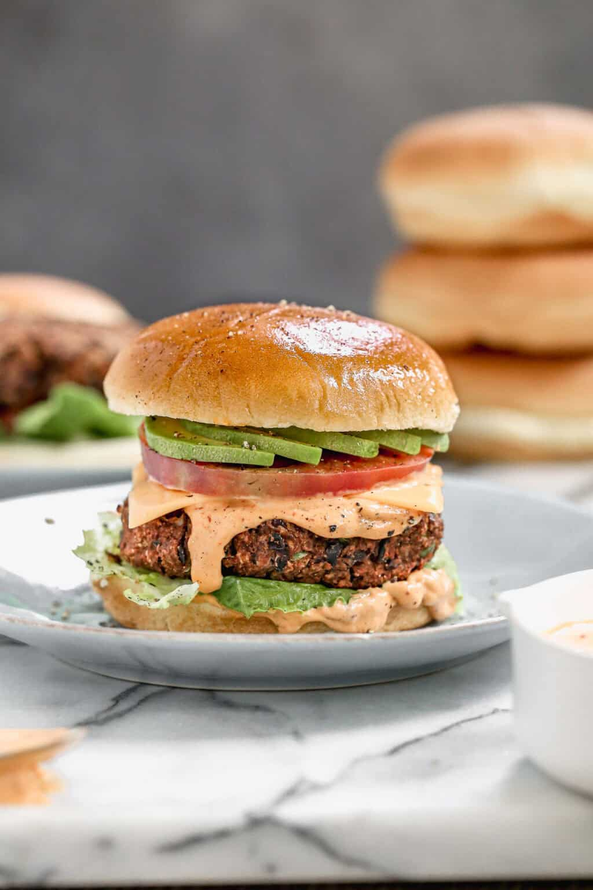

Black Bean Smash Burgers with Creamy Ricotta Sauce

Crispy-edged smashed black bean patties with melted cheddar, a lemony garlic ricotta sauce and all the classic burger toppings.
Prep time: 20 minutes plus 15 minutes chilling. Cook time: 12 to 15 minutes. Total: about 50 minutes. Makes 4 double-patty burgers.
Ingredients
- 480 grams tinned black beans, drained, rinsed and patted dry
- 50 grams panko breadcrumbs
- 1 large egg
- 2 garlic cloves, finely grated
- 1 tablespoons tomato paste
- 1 teaspoons smoked paprika
- 1 teaspoons ground cumin
- 1 tablespoon Salt
- Black pepper
- Olive oil or neutral oil
- 150 grams ricotta
- 1 tablespoons lemon juice
- Chopped chives or parsley
- 4 burger buns, toasted
- 4 cheddar slices
- Lettuce leaves
- 1 large tomato, sliced
- 1 Red onion
- Dill Pickle
Process
- Make the ricotta sauce: Stir together 150 grams ricotta, 1 tablespoons lemon juice, 1 tablespoons extra virgin olive oil, for the sauce, 2 tbsp chopped chives or parsley, half the grated garlic from 2 garlic cloves, finely grated and a pinch of salt and pepper. Add a splash of water if you want it looser. Taste, adjust and chill until needed.
- Mash the beans: In a large bowl, mash about two thirds of the 480 grams tinned black beans, drained, rinsed and patted dry with a fork or potato masher, leaving the rest whole for texture. The mixture should be thick and sticky, not wet.
- Mix the patty base: Add 50 grams panko breadcrumbs, 1 large egg, the remaining garlic from 2 garlic cloves, finely grated, 1 tablespoons tomato paste, 1 teaspoons smoked paprika, 1 teaspoons ground cumin, 0.8 teaspoons salt, divided and 0.5 teaspoons black pepper to the beans. Mix until it holds together when squeezed. If too wet, add a spoonful more breadcrumbs.
- Shape and chill: Divide into 8 equal balls (about the size of a golf ball). Place on a tray lined with baking paper and chill for 15 minutes
- Heat the pan: Heat a large cast iron or heavy frying pan over medium-high heat with a little of the 3 tablespoons olive oil or neutral oil, divided. It needs to be properly hot for crispy edges.
- Smash and sear: Place 3 to 4 balls in the pan. Cover each with a piece of baking paper and press firmly with a flat spatula or the bottom of a glass until about 1cm thick. Cook undisturbed for 3 minutes until a dark crust forms, then flip carefully with a thin spatula.
- Melt the cheese: Cook the second side for 1 to 2 minutes. Top the patties with 4 cheddar slices, folding to fit, and cover the pan briefly so the cheese melts. Repeat with the remaining balls, adding more oil as needed.
- Assemble: Spread ricotta sauce on both halves of each toasted 4 burger buns, toasted. Layer with 4 lettuce leaves, 1 large tomato, sliced, 0.5 red onion, thinly sliced, 8 dill pickle slices, then stack two cheesy patties on each bottom bun. Add more sauce, top with the bun and serve right away.
Notes
Tips: Pat the beans dry so the patties crisp rather than steam. Use baking paper between the spatula and patty to stop sticking. The patties are softer than meat, so flip gently with a thin, wide spatula.
Variations: for vegan, use a flax egg, skip the cheese and swap the ricotta for cashew cream or hummus. Add pickled jalapeños or a drizzle of hot sauce for heat. Make-ahead: the shaped balls keep in the fridge for 24 hours, and the sauce for 2 days.